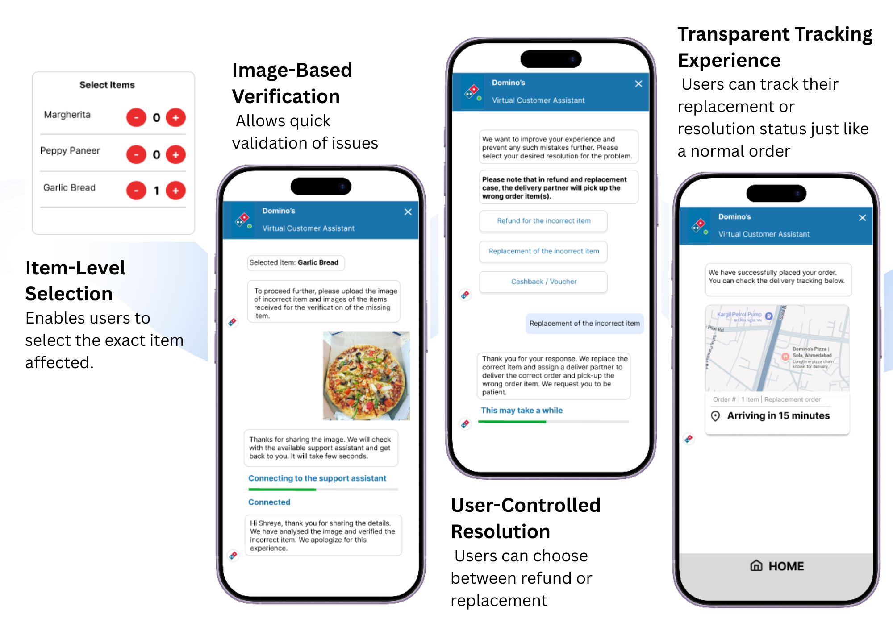

Domino's - Enhanced Customer Support
1. Context & Problem
While ordering from Domino’s, I experienced a situation where the delivered order was incorrect. When I tried to resolve it through the app, the process felt slow, unclear, and heavily dependent on chatbot interactions. The system offered compensation (like vouchers) instead of actually solving the problem. This highlighted a broader product issue: in a high-frequency product like Domino’s, even small failures in order accuracy can significantly impact user trust if the resolution experience is not seamless.
2. Understanding the Problem
The current support experience requires users to navigate through predefined chatbot flows, often without clarity on what will happen next. Users have limited control over how the issue is resolved, and the process feels reactive rather than guided. From a user’s perspective, the frustration is not just about receiving the wrong item, it’s about the effort required to fix it. Many users may choose not to report issues at all, leading to silent dissatisfaction and reduced trust in the platform.
3. Root Cause & Key Insight
After breaking down the experience, the problem was not just incorrect orders, but the way the system handles them.
- The complaint flow is unstructured and not user-driven
- There is no item-level issue reporting
- Resolution options are not clearly presented
- There is limited visibility into the status of the issue
Key Insight:
The real problem is not issue resolution itself, but the absence of a structured,
transparent, and user-controlled resolution process.
Existing Experience: Unstructured Issue Resolution Flow

4. Solution
The solution introduces a guided, step-by-step issue resolution flow integrated within the order details screen. Instead of relying on open-ended chat interactions, the system helps users:
- Clearly identify the issue (wrong item, missing item, delay)
- Select the specific item affected
- Upload an image for quick verification
- Choose how they want the issue resolved (refund or replacement)
- Track the progress of their request in real-time
This transforms the experience from reactive support to a structured decision flow.
5. Final Solution
The solution introduces a guided, step-by-step issue resolution flow integrated within the order details screen.
• Clearly identify the issue (wrong item, missing item, delay)
• Select the specific item affected
• Upload an image for quick verification
• Choose how they want the issue resolved (refund or replacement)
• Track the progress of their request in real-time
Proposed Solution: Structured Issue Resolution Flow

6. Impact & Metrics
To evaluate the effectiveness of the improved issue resolution system, the following metrics focus on speed, user experience, and trust recovery.


7. Summary
By shifting from a chatbot-driven approach to a structured resolution flow, the system becomes more predictable, transparent, and user-friendly. This not only reduces friction for users but also creates a scalable framework for handling post-order issues, ultimately strengthening trust and long-term engagement.